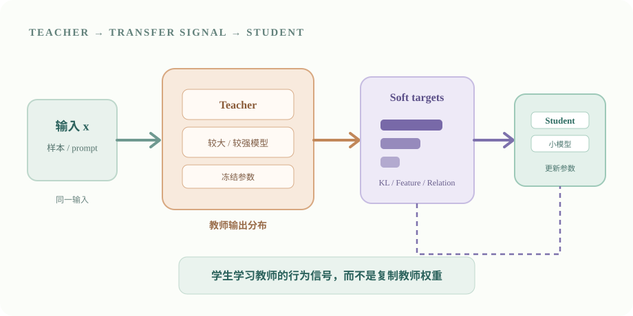
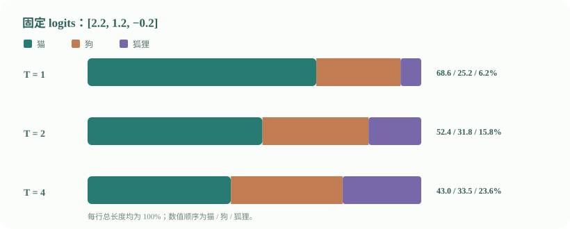
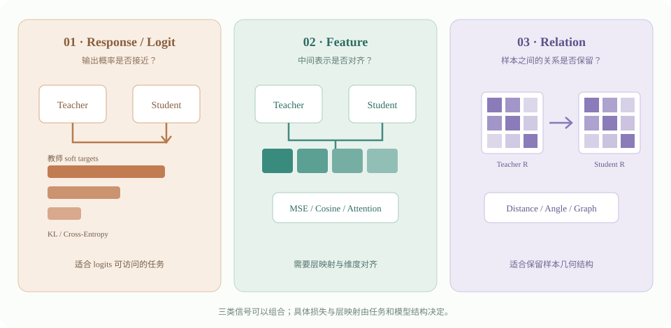
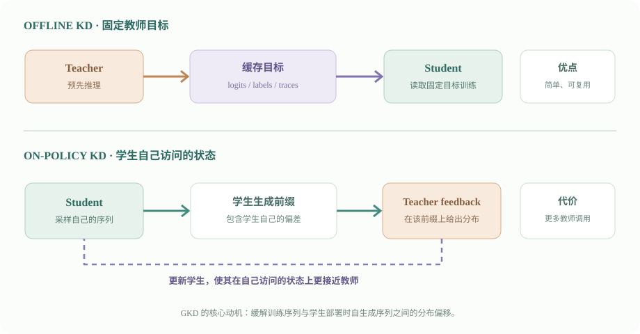
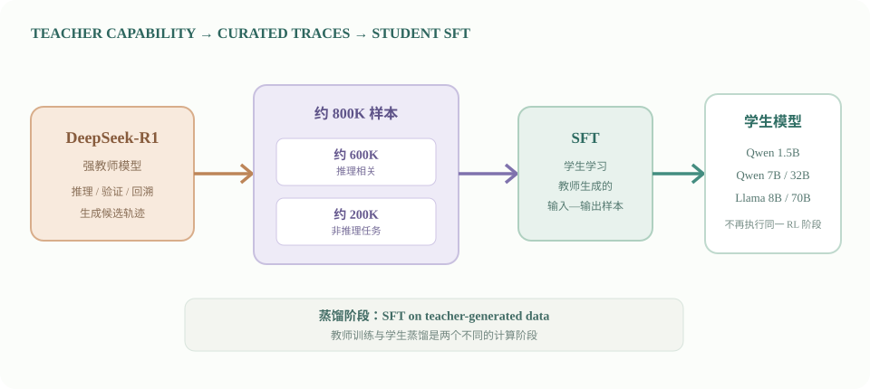

Understanding
Knowledge Distillation
大模型学到的知识，能否迁移到更小、更便宜的模型？从 Hinton 的软目标、温度缩放与 KL 散度出发，走到 Transformer 中间表征、LLM 推理轨迹和 DeepSeek-R1。
01 · 蒸馏究竟在转移什么？
假设你已经训练出一个效果很好的模型：它可能有数十亿参数，甚至是多个模型组成的集成。训练它花了很多 GPU 时间，但真正部署时，你可能只需要一个延迟更低、显存更小、成本更可控的模型。问题是：能不能让一个小模型学习大模型已经学会的行为，而不是从头再学一遍？
知识蒸馏（Knowledge Distillation, KD）给出的答案是：先让教师模型（Teacher）在输入上产生更丰富的监督信号，再训练学生模型（Student）去拟合这些信号。学生不必复制教师的参数，也不必拥有相同的网络结构；它要学习的是教师在相关输入分布上的行为或内部表征。

通常能力更强、计算成本更高。它可以输出类别概率、token logits、中间层特征、注意力矩阵，或完整的文本/推理轨迹。
通常更小、更快或更适合目标设备。它需要在有限容量下，保留对目标任务最重要的知识，而不是逐项复刻教师的所有内部细节。
Hinton、Vinyals 与 Dean 在 2015 年的工作将这一思路系统化：一个大型模型或集成可以把学到的泛化行为传给更小的模型。论文中特别强调，模型知识不应只被理解为参数值；它也可以被看作输入到输出的映射。阅读原论文。
02 · 为什么软目标比硬标签信息更多？
先从一个只有三个类别的分类问题开始。图片的真实标签是“猫”。传统监督学习通常把目标写成 one-hot 向量：猫为 1，狗和狐狸为 0。这个标签告诉学生“正确答案是哪一个”，却没有告诉它：教师认为“狗”比“狐狸”更像猫，还是反过来。
教师模型的输出概率则保留了这种相对判断。例如：
这是教学示例，不是某篇论文的实验数据。第二类和第三类虽然都不是正确标签，但概率大小反映了教师对类别相似性的判断。
这就是所谓的 dark knowledge（暗知识）：它不一定是显式写在标签里的知识，而是藏在教师输出分布中的类别关系。对于语言模型，类似的信息可能体现在“下一个 token 的候选分布”中：多个词都合理，但教师对它们的相对偏好不同。
温度 T：让分布变软，而不是改变类别顺序
对教师 logits 做温度缩放：
是第 i 类的 logit，K 是类别数，T 是温度。T=1 是普通 softmax；T 越高，概率分布通常越平滑。训练结束后，学生部署时通常恢复 T=1。

固定教师 logits 为 [2.2, 1.2, −0.2]。拖动温度，观察最可能类别之外的概率质量如何展开。类别顺序不会因为温度缩放而改变。
交互值由页面内的 softmax 公式直接计算。T=4 时分布更平滑，但“猫”仍然是最大概率类别。
温度不是越高越好。温度太低，学生几乎只看到教师的 top-1 选择；温度太高，分布会变得过于均匀，教师对类别的区分信息也会被削弱。实践中需要在验证集上选择温度，而不是把某个固定数值当成普适规律。
03 · 温度、KL 与 T² 损失
现在把“让学生接近教师”写成一个可优化的目标。设教师和学生在温度 T 下的输出分布分别为 与 。一种常见蒸馏损失是教师分布到学生分布的 KL 散度：
这里的 KL 方向是 ：教师分布作为目标，学生分布作为被优化的一方。不同论文也可能使用其他方向或其他散度。
为什么前面还要乘 ？当 T 增大时，softmax 的分布变平，学生 logits 的梯度尺度也会随温度变化而缩小。Hinton 等人指出，在高温近似下，软目标交叉熵的梯度会按约 缩放；乘上 可以让改变温度时软目标项的梯度贡献更可比。它是损失尺度校正，不是“温度越高，知识越多”的定理。
软目标不能替代真实标签
如果数据集还提供真实标签 y，可以把蒸馏目标与普通监督目标结合：
λ 控制软目标项的权重。实际论文可能使用不同记号和权重约定；复现实验时要检查原文，不要只凭符号猜测。
第一项让学生学习教师的相对判断，第二项让学生不要偏离数据标签。教师可能犯错、过拟合或对某个样本过度自信，因此真实标签仍然是重要的校正信号。
张量维度：分类与语言模型有什么不同？
分类任务中，每个样本通常有一个 K 维 logits 向量。自回归语言模型则会为每个位置预测整个词表的分布。若 batch 大小为 B、序列长度为 L、词表大小为 V，那么教师 logits 与学生 logits 在共享 tokenizer / vocab 时可写为：
KL 通常沿词表维 V 计算，再对有效 token 位置做 mask 与平均；padding token 不应被当作真实训练目标。若 teacher/student 词表不同，就不能直接逐 token 对齐 logits，需要改用文本级输出或显式映射。
04 · 三种知识：输出、特征、关系
“蒸馏什么”比“模型有多大”更能决定方法设计。经典研究通常把知识信号分成三类：输出响应、内部特征和样本/特征之间的关系。它们不是互斥的算法名称，而是教师可以提供的不同监督层次。

4.1 Response-based：对齐输出响应
最经典的方式就是前面介绍的 soft targets：教师和学生对同一输入产生类别 logits 或 token logits，学生通过 KL / 交叉熵拟合教师分布。优点是实现简单、教师与学生结构可以不同；局限是学生只看到最终输出，无法直接得到教师中间层的表示。
4.2 Feature-based：对齐中间表征
对于 Transformer，可以选择某些层的 hidden states、attention maps 或 embedding 层输出作为蒸馏目标。若教师和学生的隐藏维度不同，通常需要一个投影层把学生表示映射到教师的空间。一个示意性的特征损失是：
、 分别是教师和学生的中间表征， 是维度对齐投影，g(l) 指定教师与学生层的对应关系。该式是通用示意，具体论文可能采用 MSE、余弦距离或注意力专用目标。
DistilBERT 在预训练阶段组合语言模型损失、蒸馏损失和 cosine-distance 损失。作者报告其模型参数规模比 BERT-base 小 40%，保留约 97% 的语言理解能力，推理速度快 60%；这些数字对应论文指定的模型与评测设置，不应直接外推到任意模型。Sanh et al., 2019。
TinyBERT 则进一步对 embedding 输出、Transformer hidden states、attention matrices 和 prediction logits 做对齐，并采用通用预训练蒸馏 + 任务特定蒸馏的两阶段框架。论文中的 TinyBERT4 在 GLUE 上达到教师 BERT-base 约 96.8% 的性能，参数规模约为 1/7.5，推理速度约快 9.4 倍。Jiao et al., Findings EMNLP 2020。
4.3 Relation-based：保留样本之间的几何关系
有时逐点拟合特征并不理想：学生容量较小，无法把教师的每一个表示都对齐。但它仍然可能学会“哪些样本相似、哪些样本相距更远”。关系蒸馏就会对齐样本间距离、角度、相似度矩阵或图结构，而不是只对齐单个向量。
R(·) 可以是 batch 内样本两两距离、角度或相似度矩阵；这是一种概念性写法，不代表所有关系蒸馏论文都采用同一个目标。
05 · 离线、在线与自蒸馏
除了“传递哪种知识”，还要问“教师何时产生监督、学生看到什么数据”。同一种 response KD 可以离线完成，也可以在线完成；因此这条分类轴与输出/特征/关系分类轴是正交的。

先用教师在 transfer set 上生成 logits / soft labels，再固定这些目标训练学生。实现和数据管线较简单，但学生训练时看到的前缀可能与部署时自己生成的前缀不同。
训练时教师和学生持续交互，或者根据当前学生状态更新监督信号。它可以适应学生变化，但需要额外的教师前向计算与更复杂的训练调度。
自蒸馏与多教师蒸馏
Self-distillation 不要求教师一定比学生大很多：同一个模型的深层/浅层、早期/后期 checkpoint，或带有额外监督头的分支，都可以形成 teacher–student 关系。Multi-teacher KD 则组合多个教师，可能通过平均概率、置信度加权或特征融合来生成学生目标。前者的风险是放大自身错误，后者的风险是教师之间的冲突和额外成本。
GKD：让学生从自己的错误中学习
自回归模型存在一个关键问题：训练时学生可能只在真实数据或教师生成的序列上学习，但推理时它会不断消费自己的输出。一旦学生早期生成了不同于教师轨迹的 token，后续前缀也会改变，训练分布和部署分布便出现 distribution mismatch。
Agarwal 等人在 ICLR 2024 的 Generalized Knowledge Distillation (GKD) 中，让学生采样自己的输出序列，再让教师对这些序列提供反馈。这样，学生会在自己实际访问到的状态上学习，而不只是在教师预先写好的轨迹上学习。GKD 还讨论了 forward KL、reverse KL 和 generalized JS 等可选散度，并可与 RL fine-tuning 结合。阅读 GKD 原论文。
06 · 从分类蒸馏走向 LLM
LLM 蒸馏的“知识对象”变得更丰富。教师不仅可以给出每个 token 的概率分布，还可以生成完整答案、解释轨迹、代码、工具调用序列或多轮对话样本。由此可以把 LLM KD 看作多个维度的组合，而不是一个单一算法。
6.1 白盒与黑盒蒸馏
能够访问教师 logits、隐藏状态、注意力或其他内部信号。可以做 token-level KL、feature matching、attention matching；监督更细，但依赖模型访问权限、计算资源和兼容的 tokenizer。
只能调用教师 API 或读取教师生成的文本。学生通过教师答案、解释或合成数据做 SFT。更容易用于闭源教师，但拿不到完整概率分布，监督信号的信息粒度较粗。
6.2 Token-level 与 Sequence-level
Token-level 蒸馏通常逐位置对齐教师和学生的词表分布；Sequence-level 蒸馏则让教师先生成一条完整序列，再把这条序列作为学生的监督答案。后者可写成标准自回归负对数似然：
是教师生成的目标序列。学生在教师前缀上预测下一个 token，这本质上是一种以教师输出为标签的 SFT。
这也解释了一个常见说法为什么不严谨：“SFT 和蒸馏是两种完全不同的训练算法。”不一定。对教师生成的文本做监督微调，本身就是一种 sequence-level / black-box distillation 形式；区别在于训练目标数据的来源和教师信息的使用方式。
6.3 Reasoning Distillation：迁移解题轨迹，而不只是最终答案
对于数学、代码和复杂问答，只复制最终答案可能让学生学不到中间的分解、验证、回溯和错误修正过程。Reasoning KD 通常让强教师生成推理轨迹，再通过正确性过滤、格式约束或 verifier 选择训练样本，最后对小模型做 SFT。
需要注意：可见的 rationale 是一种监督文本，不等同于模型内部完整、忠实的“思维过程”。它可能包含冗余、错误或事后合理化；训练前必须检查答案正确性、步骤一致性、数据污染和安全边界。
07 · DeepSeek-R1：把推理轨迹交给小模型
DeepSeek-R1 是一个很好的现代案例，因为它把“教师如何获得能力”和“学生如何接收能力”分成了两个不同过程。先通过大模型训练出高质量推理行为，再把这些输出整理成监督数据，让小模型学习。

论文中真正发生了什么？
- 先训练教师：DeepSeek-R1 系列通过多阶段流程提升推理能力，其中包括强化学习、拒绝采样和监督微调。
- 生成并筛选数据：论文 Appendix B.3.3 报告约 80 万条监督样本，其中约 60 万条与推理有关，约 20 万条是写作、事实问答、翻译等非推理数据。推理样本通过多次采样并保留正确回答；部分样本由规则验证或模型评判。
- 训练学生：蒸馏出的 Qwen / Llama 学生使用 SFT。论文明确说明，这一蒸馏阶段没有再加入 RL 阶段。
- 评估学生：在 AIME、MATH-500、GPQA Diamond、LiveCodeBench 和 Codeforces 等任务上衡量不同规模学生的表现。
下面摘录原论文 Table 15 中三个 Qwen 学生模型的部分结果。这里每个指标的含义不同：AIME、MATH-500、GPQA 和 LiveCodeBench 是 pass@1，Codeforces 是 rating，不能把这些列当成同一种百分比比较。
| 学生模型 | AIME 2024 pass@1 | MATH-500 pass@1 | GPQA Diamond pass@1 | LiveCodeBench pass@1 | Codeforces rating |
|---|---|---|---|---|---|
| R1-Distill-Qwen-1.5B | 28.9 | 83.9 | 33.8 | 16.9 | 954 |
| R1-Distill-Qwen-7B | 55.5 | 92.8 | 49.1 | 37.6 | 1189 |
| R1-Distill-Qwen-32B | 72.6 | 94.3 | 62.1 | 57.2 | 1691 |
来源：DeepSeek-R1, Appendix F, Table 15（arXiv:2501.12948v2，2026-01-04 修订版）。表中数字按论文原口径保留；不同模型的训练预算、底座、推理设置与评测协议不完全相同，不能把这张表解释成“参数翻倍就会固定增加多少准确率”。
这个案例最重要的研究启示并不是某个单一分数，而是：高质量教师轨迹可以成为可复用的监督数据，使学生通过 SFT 获得一部分复杂推理行为，而不必完整复现教师训练时的昂贵 RL 流程。但它也不意味着蒸馏永远优于 RL；结果依赖教师能力、样本质量、学生容量、基座模型和评测任务。
08 · 蒸馏与其他压缩/训练方法
蒸馏经常与剪枝、量化、低秩适配、SFT 和强化学习放在一起讨论，但它们解决的问题并不相同。一个很实用的判断方式是：它改变的是模型结构、数值表示、训练参数，还是监督信号？
| 方法 | 核心改变 | 典型收益 | 与蒸馏的关系 |
|---|---|---|---|
| Knowledge Distillation | 训练目标增加教师提供的知识信号 | 学生学习教师行为；若学生更小可降低部署成本 | 可与量化、剪枝和 PEFT 组合 |
| Pruning（剪枝） | 删除权重、通道、头或层 | 减少参数或计算 | 可用 KD 补偿剪枝造成的性能损失 |
| Quantization（量化） | 用更低位宽表示权重/激活 | 降低存储、带宽和部分硬件上的计算成本 | 可先蒸馏再量化，也可做量化感知蒸馏 |
| LoRA / PEFT | 冻结大部分基座参数，只训练少量适配参数 | 降低微调参数与优化器状态成本 | 可用教师生成的数据训练 LoRA 学生；但 PEFT 本身不一定减少基础模型推理成本 |
| SFT | 最大化给定目标答案的条件似然 | 让模型学习示范数据中的任务行为 | 教师输出作为目标答案时，SFT 就可实现 sequence-level KD |
| Dataset Distillation | 压缩训练数据集，构造少量合成/凝练样本 | 降低数据存储或训练数据处理成本 | 与模型 KD 相关但目标不同；可以组合，不能把“数据集变小”误称为“学生模型被蒸馏” |
| RL / RLHF / RLVR | 依据奖励或偏好优化策略 | 探索并优化可验证结果或偏好目标 | 可以与 on-policy KD 结合，但奖励优化与模仿教师分布不是同一目标 |
还要区分 Dataset Distillation（数据集蒸馏）：它关注如何把训练集压缩成少量高信息量的合成样本；Knowledge Distillation 则关注教师模型知识如何迁移到学生模型。两者可以协同，但研究对象、优化目标和评测口径不同。可参考 Fang et al. (2026) 的 KD 与 Dataset Distillation 综述。
09 · 一个可执行的蒸馏实验
下面的最小示例不训练神经网络，而是验证蒸馏中最核心的数值关系：温度 softmax、KL 散度、T² 缩放，以及学生 logits 上的梯度。它是一个确定性的教学算例，不是论文复现，也不代表实际模型的 benchmark。
实验设定
- 教师 logits：
[2.2, 1.2, -0.2]，代表教师对三个类别的偏好。 - 学生 logits：
[1.7, 1.1, -0.1]，初始分布与教师接近但并不相同。 - 温度：。先将两者转换为 softmax 概率，再计算 。
本仓库配套的纯 Python 脚本实现了这些计算，并用有限差分检查解析梯度。运行方式：
python posts/training/knowledge-distillation/distillation_demo.py
python -m pytest -q tests/test_knowledge_distillation.py核心逻辑可以缩写成：
teacher = [2.2, 1.2, -0.2]
student = [1.7, 1.1, -0.1]
temperature = 2.0
teacher_prob = softmax(teacher, temperature)
student_prob = softmax(student, temperature)
loss = temperature ** 2 * kl_divergence(
teacher_prob, student_prob
)
gradient = distillation_gradient(
student, teacher, temperature
)注意这里的 student 只是一个 logits 向量。真正训练 Transformer 时，梯度会通过学生网络的输出层和所有参与训练的参数反向传播；教师通常被冻结，不接收蒸馏损失的梯度。
10 · 失败模式与评测设计
10.1 教师错误会被继承
学生拟合教师不代表学生更接近真实世界。教师的幻觉、偏见、知识过时和安全缺陷都可能进入蒸馏数据。对开放式文本任务，应增加事实核验、拒答边界、安全测试与人类抽样审核。
10.2 学生容量不足
如果教师在某些任务上依赖很复杂的表示，而学生太小，就可能出现不可约的能力差距。继续增加 KD 权重不一定有用；可以调整目标任务范围、选择更合适的学生结构，或只蒸馏最重要的能力子集。
10.3 训练分布与部署分布不一致
离线蒸馏如果只使用教师生成的正确轨迹，学生在推理时可能遇到自己产生的错误前缀。可以通过 on-policy 采样、混合教师与学生轨迹、课程式采样或 verifier 反馈来缓解，但这些策略会增加计算和实现复杂度。
10.4 数据与评测污染
教师生成的训练数据可能覆盖公开 benchmark 的题目或近似版本。应使用时间切分、去重、近重复检测、训练集/评测集隔离和独立评测集，并在报告中说明筛选规则、模型版本、采样温度、prompt 与评测协议。
10.5 不要只看准确率
任务准确率、鲁棒性、校准、长尾样本、跨域泛化和安全行为。
模型大小、峰值显存、首 token 延迟、tokens/s、吞吐量、能耗与服务成本。
教师调用费用、生成样本数量、过滤成本、训练 GPU 小时和数据许可。
一个更公平的实验应该比较同一任务、相近推理预算、相同数据切分和一致的硬件环境；报告学生在多个指标上的 Pareto 前沿，而不是只挑一个最亮眼的准确率数字。
11 · 研究路线与参考文献
知识蒸馏不是一种固定损失，而是一套“选择教师信号—选择学生可学习目标—设计数据分布—验证能力迁移”的方法体系。读一篇新的 KD 论文时，建议按下面五个问题拆解：
- 知识是什么？ logits、hidden states、attention、样本关系、完整序列，还是推理轨迹？
- 谁能访问教师？ 白盒 logits/特征，还是只能获得黑盒文本输出？
- 学生看到什么数据？ 真实样本、教师生成样本、学生自己生成的样本，还是合成/无标签数据？
- 优化什么目标？ KL、交叉熵、MSE、余弦距离、关系损失，还是多目标组合？
- 收益如何验证？ 是否同时衡量任务质量、泛化、安全、延迟、显存与蒸馏成本？
建议的先修与延伸阅读
- Understanding BERT：理解 Transformer 表示、MLM 预训练与微调。
- Understanding LoRA：理解参数高效微调与蒸馏的区别。
- Understanding QLoRA：理解量化与低秩适配如何组合。
- Understanding GRPO：理解 RL 后训练与模仿教师输出的目标差异。
核心论文与综述
- Hinton, G., Vinyals, O., & Dean, J. (2015). Distilling the Knowledge in a Neural Network. arXiv:1503.02531. 重点：§2 的温度 softmax、软目标和 梯度尺度校正。
- Sanh, V. et al. (2019). DistilBERT, a distilled version of BERT: smaller, faster, cheaper and lighter. 重点：§2 的三项损失与预训练阶段蒸馏。
- Jiao, X. et al. (2020). TinyBERT: Distilling BERT for Natural Language Understanding. Findings of EMNLP 2020. 重点：Transformer 多层蒸馏和两阶段训练。
- Agarwal, R. et al. (2024). On-Policy Distillation of Language Models: Learning from Self-Generated Mistakes. ICLR 2024. 重点：学生自生成样本、分布偏移和 GKD。
- DeepSeek-AI. (2025, revised 2026). DeepSeek-R1: Incentivizing Reasoning Capability in LLMs via Reinforcement Learning. 重点：Appendix B.3.3、Appendix F、Tables 5/15/16。
- Park, W. et al. (2019). Relational Knowledge Distillation. CVPR 2019. 重点：distance-wise 与 angle-wise relational losses。
- Xu, X. et al. (2024). A Survey on Knowledge Distillation of Large Language Models. 重点：算法、技能迁移、领域垂直化与数据增强。
- Yang, C. et al. (2024). Survey on Knowledge Distillation for Large Language Models: Methods, Evaluation, and Application. 重点：white-box 与 black-box KD 的方法和评估差异。
- Moslemi, A., Briskina, A., Dang, Z., & Li, J. (2024). A survey on knowledge distillation: Recent advancements. Machine Learning with Applications 18, 100605. 重点：response、feature、relation、self、cross-modal 与 adversarial KD。
- Mansourian, A. M. et al. (2025). A Comprehensive Survey on Knowledge Distillation. 重点：蒸馏来源、方案、算法、模态与应用的多维分类。
- Fang, L. et al. (2025). Knowledge Distillation and Dataset Distillation of Large Language Models: Emerging Trends, Challenges, and Future Directions. 重点：区分模型知识迁移与训练数据集压缩。